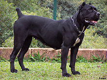
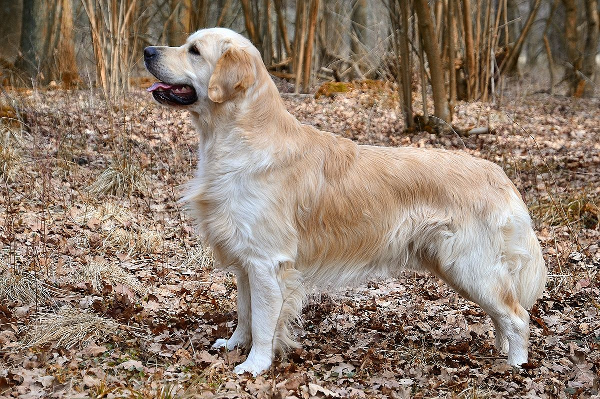

Bandogs are intelligent, loyal, protective, and at times highly aggressive; they have fantastic
watch- and guard dog abilities, but they are illegal to own in many areas. Bandogs require
moderate care (little grooming, moderate training, and a lot of exercise), and are pretty healthy
overall.
Cane Corso

Image of Cane Corso
The Cane Corso is a breed of dog that is large and imposing and has many reported cases of serious
injuries
or fatalities caused by them every year. ... Due to its massive size and build, it can easily overpower
some people and animals and can cause serious injury with some instances being fatal.
This section tells us about frriendly breeds
Golden Retreiver

Image of Golden Retriever
The Golden Retriever is one of the most popular dog breeds in the United States. The breed's friendly,
tolerant attitude makes them great family pets, and their intelligence makes them highly capable working
dogs. These dogs are fairly easy to train and get along in just about any home or family.
Pug
Image of Pug
The life expectancy of a Pug dog is between 12 and 15 years, though the majority of Pugs succumb closer
to the low end of this. The average male will live 12.8 years and female Pugs live a bit longer, with
average life span being 13.2 years. This said, a Pug can live well into his teens (15, 16 or even 17
years).